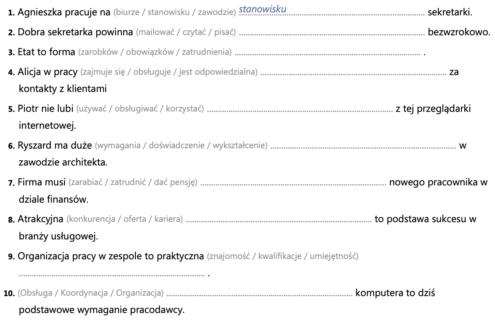
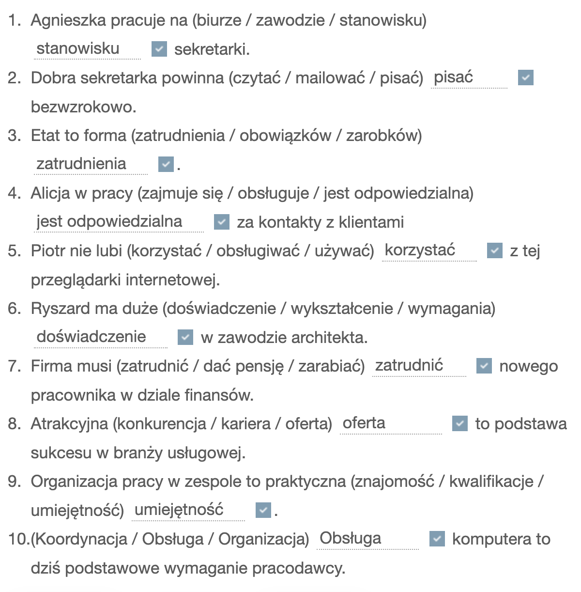
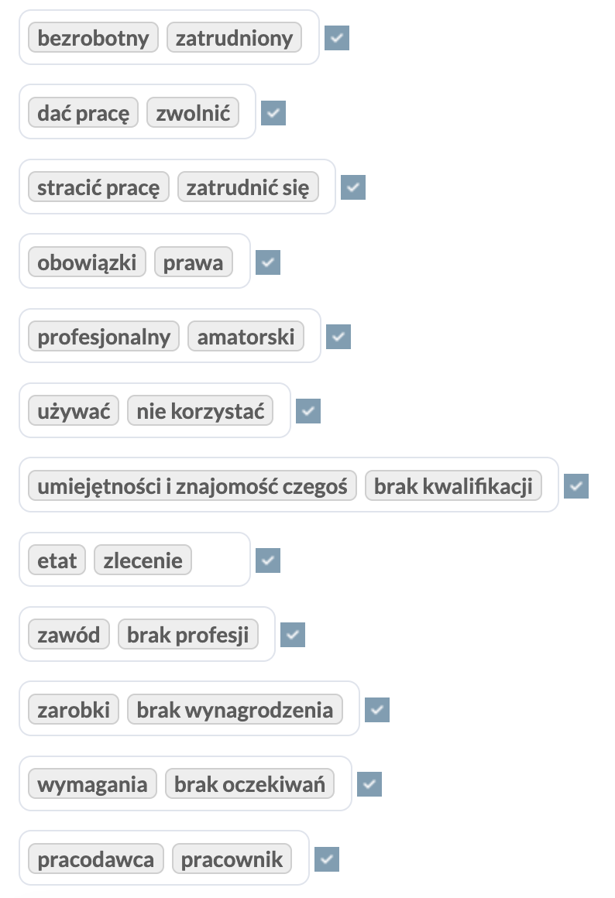
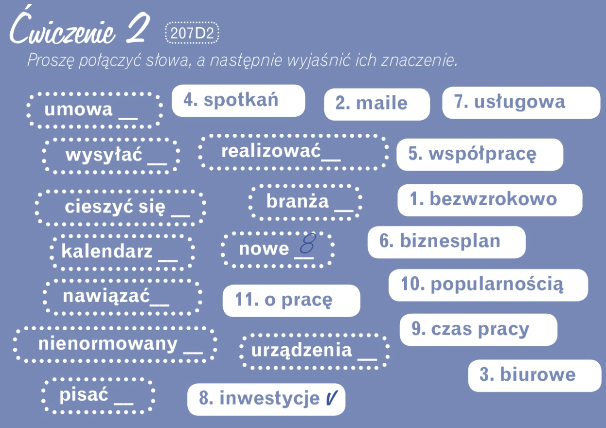
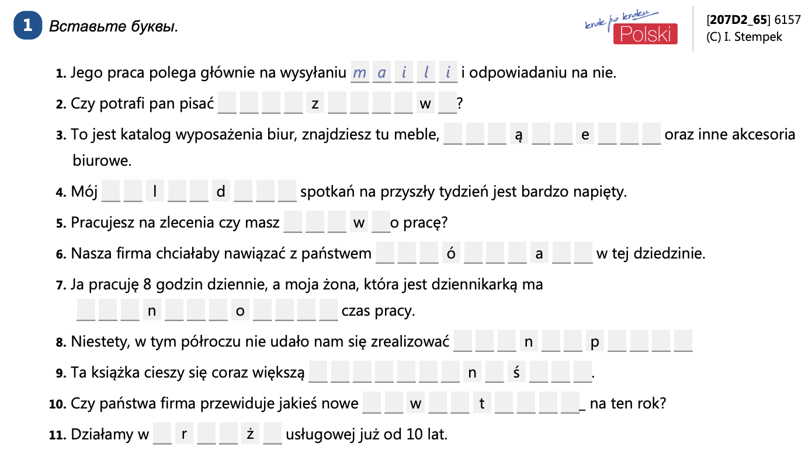
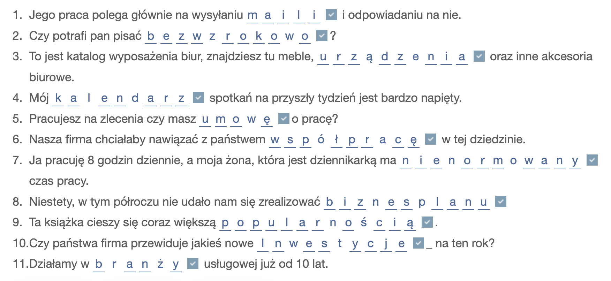

Krok po kroku - 2
07_D - Powtórzenie
Nowe słowa - temat 7-D >>>
207D1 - Proszę uzupełnić.

Odpowiedź

207~D1_1 - Please correct the sentences. Please mark / delete the wrong words.
- Czy mogę spytać, jaki jest pana wyuczony | wyedukowany zawód?
- W dzisiejszych czasach usługa | obsługa komputera to jedna z podstawowych umiejętności.
- Na to stanowisko poszukujemy osoby o wysokich kwalifikacjach | znajomościach .
- Czy ma pani jakieś referencje | restrykcje?
- Co należy do listy pana obowiązków | zarobków?
- Kto zajmuje się koordynacją | obsługą tej kserokopiarki?
- A co z pani znajomością | umiejętnością języków obcych?
- Ta firma zarabia | zatrudnia bardzo dużo na sprzedaży ubezpieczeń.
Odpowiedź
- Czy mogę spytać, jaki jest pana wyuczony zawód?
- W dzisiejszych czasach obsługa komputera to jedna z podstawowych umiejętności.
- Na to stanowisko poszukujemy osoby o wysokich kwalifikacjach.
- Czy ma pani jakieś referencje?
- Co należy do listy pana obowiązków?
- Kto zajmuje się obsługą tej kserokopiarki?
- A co z pani znajomością języków obcych?
- Ta firma zarabia bardzo dużo na sprzedaży ubezpieczeń.
перевод каждого слова с кратким описанием на русском
- stracić pracę — потерять работу: ситуация, когда человек больше не работает в компании.
- amatorski — любительский: выполненный без профессионального уровня, для удовольствия или практики.
- profesjonalny — профессиональный: связанный с профессией, выполненный на высоком уровне.
- brak kwalifikacji — отсутствие квалификации: нет нужных умений или знаний для работы.
- wymagania — требования: условия, которые нужно выполнить для получения работы или выполнения задачи.
- brak oczekiwań — отсутствие ожиданий: ситуация, когда никто ничего не требует или не ждёт.
- obowiązki — обязанности: задачи и работы, которые должен выполнять человек по должности
- zwolnić — уволить: прекратить трудовые отношения с сотрудником.
- zawód — профессия: вид постоянной работы, основанный на специальных знаниях и умениях.
- zatrudniony — трудоустроенный: человек, который официально работает.
- pracodawca — работодатель: человек или компания, которая нанимает сотрудников.
- brak profesji — отсутствие профессии: нет конкретной специальности или профессиональной деятельности.
- bezrobotny — безработный: человек, не имеющий работы, но ищущий её.
- zatrudnić się — устроиться на работу: найти и начать новую работу.
- zarobki — заработок: деньги, которые получает работник за свою работу.
- zlecenie — заказ, поручение: работа, которую выполняют по договору, обычно разово.
- etat — штатная должность, ставка: постоянная работа с фиксированными условиями.
- nie korzystać — не пользоваться: отказаться от применения чего-то.
- używać — использовать: применять что-то для определённой цели.
- brak wynagrodzenia — отсутствие оплаты: работа без получения денег.
- dać pracę — дать работу: предложить человеку трудоустройство.
- prawa — права: юридически закреплённые возможности и свободы человека.
- umiejętności i znajomość czegoś — умения и знание чего-то: то, что человек умеет делать и знает.
- pracownik — работник, сотрудник: человек, выполняющий работу по найму.
207D1_2 - Объединить антонимы.
Odpowiedź

207D1_4 - Создайте прилагательные (ж.р.) из указанных слов.
- (ciekawość) ciekawa
- (interesować się) ...............................................
- (stresować się) ..................................................
- (męczyć się) ...................................
- (wciągać) ..................................................
- (odpowiedzialność) ......................................................................
- (rozwijać się) .......................................................
- (nudzić się) .........................
- (przyszłość) ......................................................................
- (wyczerpywać) ............................................................
- (płacić dobrze) .................................................................
- (frustracja) .......................................................
- (atrakcja) ..................................................
- (satysfakcjonować) ......................................................................
Odpowiedź
- (ciekawość) ciekawa
- (interesować się) interesująca
- (stresować się) stresująca
- (męczyć się) męcząca
- (wciągać) wciągająca
- (odpowiedzialność) odpowiedzialna
- (rozwijać się) rozwijająca
- (nudzić się) nudna
- (przyszłość) przyszłościowa
- (wyczerpywać) wyczerpująca
- (płacić dobrze) dobrze płatna
- (frustracja) frustrująca
- (atrakcja) atrakcyjna
- (satysfakcjonować) satysfakcjonująca
207D2

Odpowiedź
- pisać bezwzrokowo — печатать вслепую: набирать текст, не глядя на клавиатуру.
- wysyłać maile — отправлять электронные письма: пересылать сообщения по электронной почте.
- urządzenia biurowe — офисная техника: техника, используемая в офисе (принтеры, сканеры и т. д.).
- kalendarz spotkań — календарь встреч: расписание деловых или личных встреч.
- nawiązać współpracę — установить сотрудничество: начать работать с кем-то или с организацией вместе.
- realizować biznesplan — реализовывать бизнес-план: выполнять намеченные задачи для развития бизнеса.
- branża usługowa — сфера услуг: отрасль экономики, связанная с предоставлением услуг.
- nowe inwestycje — новые инвестиции: вложение средств в новые проекты или компании.
- nienormowany czas pracy — ненормированный рабочий день: работа без фиксированного графика.
- cieszyć się popularnością — пользоваться популярностью: быть востребованным и любимым среди людей.
- umowa o pracę — трудовой договор: официальный документ о приёме на работу.
207D2_1

Odpowiedź

3. Please convert singular to plural. [207В3]
- archeolog -> archeolodzy
- architekt -> ..............................
- adwokat -> ..............................
- biznesmen -> ..............................
- budowniczy -> ..............................
- chirurg -> ..............................
- chemik -> ..............................
- dentysta -> ..............................
- dziennikarz -> ..............................
- elektryk -> ..............................
- endokrynolog -> ..............................
- fryzjer -> ..............................
- fotograf -> ..............................
- grafik -> ..............................
- górnik -> ..............................
- hydraulik -> ..............................
- historyk -> ..............................
- inżynier -> ..............................
- informatyk -> ..............................
- językoznawca -> ..............................
- jubiler -> ..............................
- księgowy -> ..............................
- kucharz -> ..............................
- lekarz -> ..............................
- listonosz -> ..............................
- mechanik -> ..............................
- muzyk -> ..............................
- nauczyciel -> ..............................
- notariusz -> ..............................
- okulista -> ..............................
- ortopeda -> ..............................
- prawnik -> ..............................
- pielęgniarka -> ..............................
- rolnik -> ..............................
- radca prawny -> ..............................
- sędzia -> ..............................
- stróż -> ..............................
- tancerz -> ..............................
- tłumacz -> ..............................
- urzędnik -> ..............................
- urolog -> ..............................
- weterynarz -> ..............................
- woźny -> ..............................
- zegarmistrz -> ..............................
- zoolog -> ..............................
Odpowiedź
- archeolog -> archeolodzy
- architekt -> architekci
- adwokat -> adwokaci
- biznesmen -> biznesmeni
- budowniczy -> budowniczy
- chirurg -> chirurdzy
- chemik -> chemicy
- dentysta -> dentyści
- dziennikarz -> dziennikarze
- elektryk -> elektrycy
- endokrynolog -> endokrynolodzy
- fryzjer -> fryzjerzy
- fotograf -> fotografowie
- grafik -> graficy
- górnik -> górnicy
- hydraulik -> hydraulicy
- historyk -> historycy
- inżynier -> inżynierzy
- informatyk -> informatycy
- językoznawca -> językoznawcy
- jubiler -> jubilerzy
- księgowy -> księgowi
- kucharz -> kucharze
- lekarz -> lekarze
- listonosz -> listonosze
- mechanik -> mechanicy
- muzyk -> muzycy
- nauczyciel -> nauczyciele
- notariusz -> notariusze
- okulista -> okuliści
- ortopeda -> ortopedzi
- prawnik -> prawnicy
- pielęgniarka -> pielęgniarki
- rolnik -> rolnicy
- radca prawny -> radcowie prawni
- sędzia -> sędziowie
- stróż -> stróże
- tancerz -> tancerze
- tłumacz -> tłumacze
- urzędnik -> urzędnicy
- urolog -> urolodzy
- weterynarz -> weterynarze
- woźny -> woźni
- zegarmistrz -> zegarmistrzowie
- zoolog -> zoolodzy